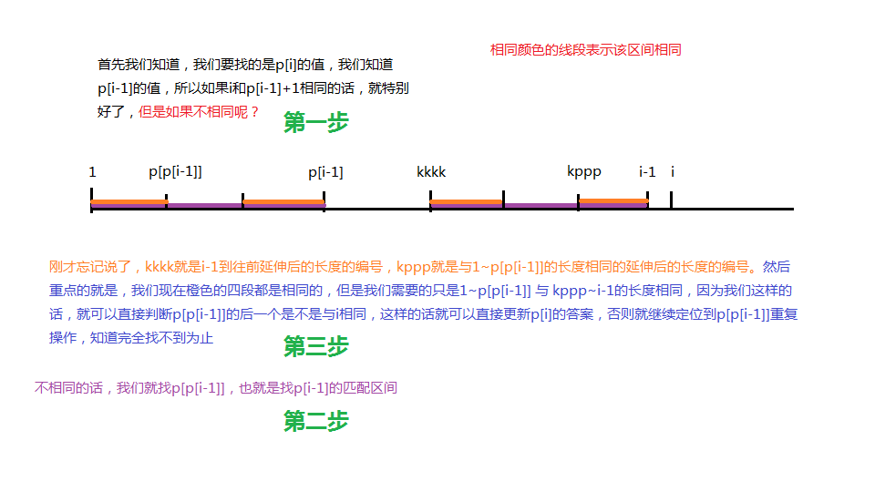

原文出处:本文由博客园博主Lop_TJ提供。
原文连接:https://www.cnblogs.com/Tristanjiang/p/11356379.html
原文连接:https://www.cnblogs.com/Tristanjiang/p/11356379.html
字符串实在是太多图片了，所以为了保存我的笔记，写博客就是最好的办法
1.KMP模版（出自caioj，但是现在不可以注册，所以我就把题面放上来）
1177: [视频]KMP模版：子串是否出现(元问题 by scy)
时间限制: 1 Sec 内存限制: 256 MB
提交: 686 解决: 455
[提交] [状态] [讨论版] [命题人:admin]题目描述
【题意】
有两个字符串SA和SB，SA是母串，SB是子串，问子串SB是否在母串SA中出现过。
如果出现过输出第一次出现的起始位置和结束位置，否则输出"NO"
【输入文件】
第一行SA（1 <= 长度 <= 100 0000）
第二行SB（1 <= 长度 <= 1000）
【输出文件】
如果SB在SA中出现过输出第一次出现的起始位置和结束位置，否则输出"NO"
【样例1输入】
aaaaabaa
aab
【样例1输出】
4 6
【样例2输入】
aaaaabaa
aax
【样例2输出】NO
我们第一个想到的一定是朴素算法，就是我们在sa长度每一个枚举sb的长度，看看有没有相同的，但是很遗憾，因为数据10万，O(nm)的时间复杂度怎么可能不炸呢？
所以我们就要用到一个很高级的东西就是KMP算法，这个算法是专门处理这些寻找字符串配对的一个算法，很好理解也很好实现，所以看一下我们下面的解释
我们需要定义一个p数组，这个p数组就是KMP模版题的最关键的地方
p[ ]是记录sb[ ]当中从后面开始往前延伸几个字符，可以与前面开始往后延伸几个字符相匹配，
就是字符的后缀和字符的前缀进行匹配，仅仅与sb[ ]有关 记住：仅仅与sb[ ]有关那么这个这么抽象的p数组到底是干什么用的呢？
因为我们是把前后匹配的，每一个sb的位置都要匹配，所以我们如果要找第i个位置的 p[i]的时候，我们可以选择继承 p[i-1]的，继承分为两种
- 第一种就是如果我们搜索到的前缀的后一个等于我们的i，那么我们的p[i]等于p[i-1]+1
- 第二种就是不等于的，我重点讲一下第二种情况

这张图非常的重要，（图片看不清楚，一定要下载下来看清楚颜色的范围）因为他非常清晰的描述了我们KMP算法高效率的实现过程，为了方便，我们先定义 j=p[i-1]
如果找不到的话，我们就将j继承为 p[j]也就是上面图中的 p[p[i-1]]的位置，然后按照一步一步往下，我们就可以找到和i相等或者根本找不到相等的，
所以就是这样
那么我相信到这里，大佬们已经不屑于看了，剩下就是代码的实现
（注释版，想要看代码理解的实现就打开这个）


1 /*朴素算法：在sa字符串当中按照sb的长度枚举，长度相同且字符相同的时候，记录下来，时间复杂度O(nm)*/
2 #include<cstdio>
3 #include<cstring>
4 #include<cstdlib>
5 #include<algorithm>
6 #include<cmath>
7 #include<iostream>
8 using namespace std;
9 char sa[1000010],sb[1010];
10 int p[1010];
11 /*p[]是记录sb[]当中从后面开始往前延伸几个字符，可以与前面开始往后延伸几个字符相匹配，
12 就是字符的后缀和字符的前缀进行匹配，仅仅与sb[]有关*/
13 int main()
14 {
15 scanf("%s%s",sa+1,sb+1);
16 int lena=strlen(sa+1),lenb=strlen(sb+1);
17 p[1]=0;/*p数组初始化*/
18 for(int i=2;i<=lenb;i++)
19 {
20 int j=p[i-1];/*偷懒操作，如果前面一个人找到了，然后我们现在要搜索的，与前面匹配完的后一个相同，那么就很好了*/
21 while(j>0 && sb[i]!=sb[j+1]) j=p[j];/*这个就是p[]的重要性，不能直接继承前面的状态的话，就进行一个很神奇的操作
22 |1--la----lb--|2-|6------|3--lc----ld--|4-|5----
23 （这是一个很抽象的图，l5表示我们当前要匹配的，l3-l4是上一个匹配好的，l1-l2是和上一个匹配的前缀）
24 然后我们发现l5!=l6，所以不能继承前面的状态，那就意味着要重新搜索？不，我们可以把j定义到l2这个位置，也就是p[j]，
25 为什么呢？因为我们把l2作为我们要搜索匹配的最后一个数，然后往前搜索，显然：
26 l1~la=lb~l2=l3~lc=ld~l4，但是我们需要的只是l1~la=ld~l4，因为他们相同，并且他们的下一个分别相同，那么我们的i就匹配完了，
27 就可以退出记录答案了，但是如果不匹配，就继续将j定义到la这个位置，让他搜索*/
28 if(sb[i]==sb[j+1]) p[i]=j+1; else p[i]=0; /*如果相同，就直接记录答案，否则没有答案（退出while之后才会来到这里）*/
29 }
30 int st,ed,j=0;/*j表示匹配成功的个数*/
31 for(int i=1;i<=lena;i++)/*这个就是关于我们匹配好的p[]要怎么运用？*/
32 {
33 /*
34 ------------|a--|5-|6--|b-l1------- sa
35 |c--|3-|4--|d-l2-- sb 这里表示两个字符串，然后我们从1开始枚举lena，发现有相同之后就j++，当然我们自然希望下一位继续相同，
36 但是如果不相同呢？那就要用到我们的p[]，假设当前j=5，然后分割出来的两个区间是完全相同的，同样的l1!=l2
37 这个时候我们就把j定义当ld，搜索到: lc~l3=l4~ld=la~l5=l6~lb，然后我们的目的就是要让
38 lc~l3=lb~lb，这个时候只要他们的下一个相同就又有一部分相同的，就是这个道理和上面的是一样的
39 */
40 while(j>0 && sa[i]!=sb[j+1]) j=p[j];
41 if(sa[i]==sb[j+1]) j++;
42 if(j==lenb){ed=i; st=i-lenb+1; break;}
43 }
44 if(j==lenb) printf("%d %d\n",st,ed); else printf("NO\n");
45 return 0;
46 }
（非注释版，已经能够理解并且打出代码的就看这个）
1 #include<cstdio>
2 #include<cstring>
3 #include<cstdlib>
4 #include<algorithm>
5 #include<cmath>
6 #include<iostream>
7 using namespace std;
8 char sa[1000010],sb[1010];
9 int p[1010];
10 int main()
11 {
12 scanf("%s",sa+1); scanf("%s",sb+1);
13 int lena=strlen(sa+1),lenb=strlen(sb+1);
14 p[1]=0;
15 for(int i=2;i<=lenb;i++)
16 {
17 int j=p[i-1];
18 while(j>0 && sb[i]!=sb[j+1]) j=p[j];
19 if(sb[i]==sb[j+1]) p[i]=j+1; else p[i]=0;
20 }
21 int st,ed,j=0;
22 for(int i=1;i<=lena;i++)
23 {
24 while(j>0 && sa[i]!=sb[j+1]) j=p[j];
25 if(sa[i]==sb[j+1]) j++;
26 if(j==lenb){ed=i; st=i-lenb+1; break;}
27 }
28 if(j==lenb) printf("%d %d\n",st,ed); else printf("NO\n");
29 return 0;
30 }